法線マップ
中級 アーティスト プログラマー
法線マップ（Normal maps） は、モデルのジオメトリを変更することなく、ひび割れや凹凸などのサーフェスの詳細を追加することに使われるテクスチャーです。法線マップには、メッシュがどのように光を反射するかに関する情報が含まれており、より複雑なジオメトリであるかのような錯覚を起こします。これにより、処理能力を大幅に節約することができます。
| 法線マップなし | 法線マップあり |
|---|---|
| 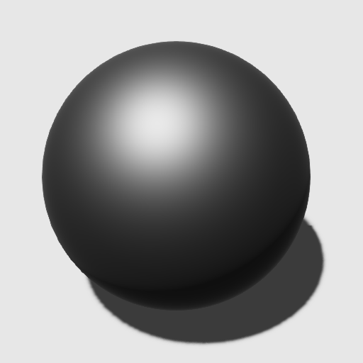 | 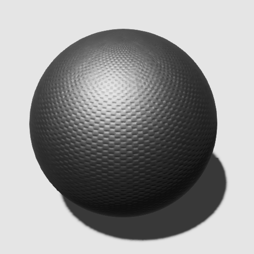 |
| オリジナルのメッシュ | 簡素化されたメッシュ | 法線マップで簡素化されたメッシュ |
|---|---|---|
| 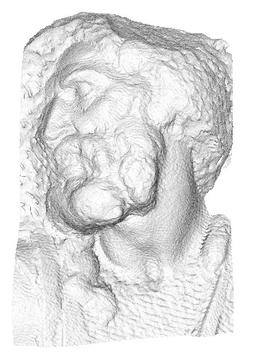 | 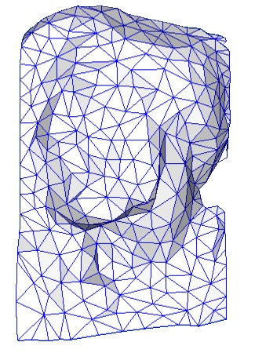 | 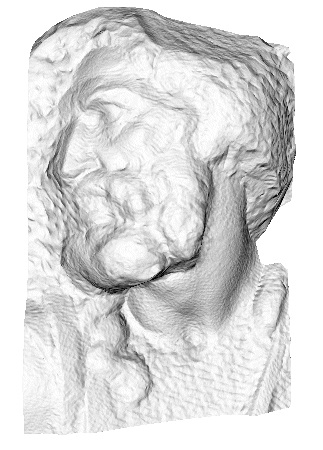 |
| 4000 個の三角形 | 500 個の三角形 | 500 個の三角形 |
(画像提供： Paolo Cignoni 氏, Attribution-ShareAlike 1.0 Generic (CC BY-SA 1.0) ライセンス。
法線マップは通常、法線ベクトル（サーフェスから離れる方向を指すベクトル）の小さな変化を表します。
Stride では、最も一般的な慣例を採用しています。
X 成分と Y 成分は、サーフェスの接線（tangent）と従接線（bitangent）に従い、Z 成分はサーフェスの法線ベクトルに従います。
つまり、値 (0, 0, 1) は法線ベクトルと一致していて変化がないことを表し、値 (-1, 0, 0) は「左」（ローカル接線空間で負の X 値）に傾いていることを表します。
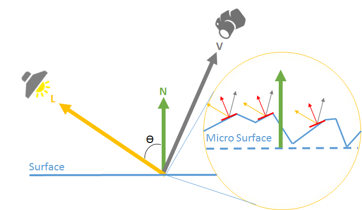
法線マップを使う
アセットビューで、法線マップとして使いたいテクスチャーを選択します。
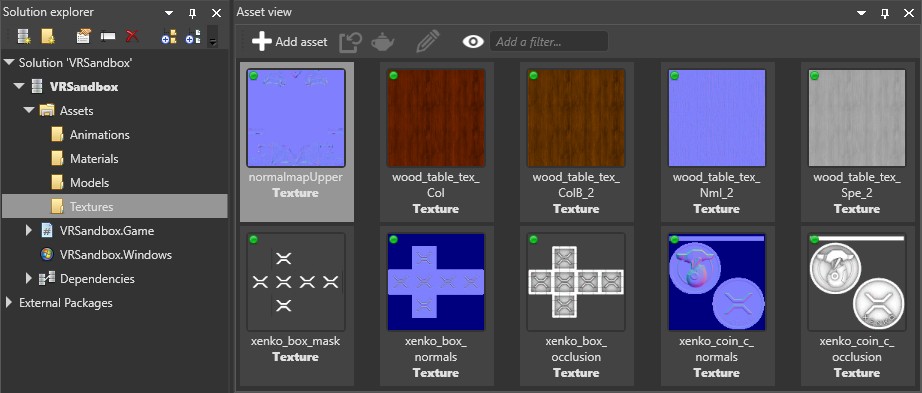
プロパティグリッドで、Type プロパティが Normal Map に設定されていることを確認します。
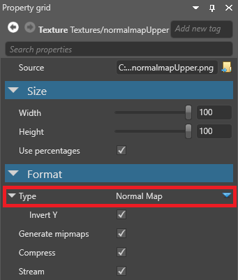
これは、Stride がテクスチャーがリニア色空間であると仮定して、それを法線マップに適したフォーマットに変換するということを意味しています。
アセットビューで、法線マップを適用したいマテリアルを選択します。
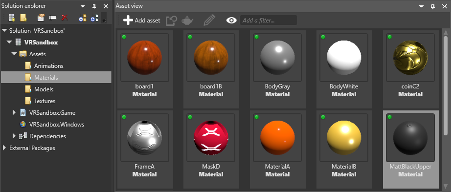
プロパティグリッドで、マテリアルの Geometry プロパティから Surface を展開します。
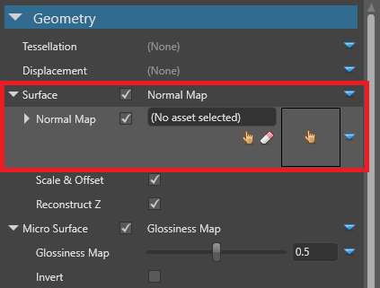
Normal map の横にある
 （置換）をクリックし、Texture が選択されていることを確認します。
（置換）をクリックし、Texture が選択されていることを確認します。Normal map の横にある
 （アセットの選択）をクリックします。
（アセットの選択）をクリックします。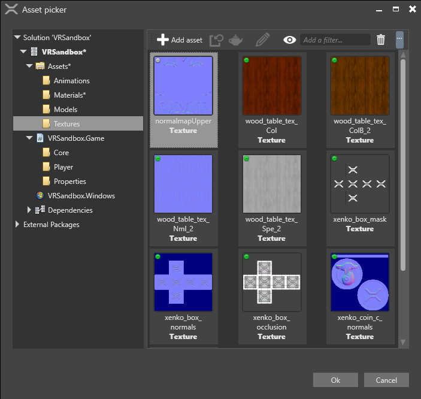
法線マップテクスチャーを選択し、[OK] をクリックします。
マテリアルの詳細については、マテリアルを参照してください。
法線マップのプロパティ
法線マップのテクスチャには、テクスチャの共通プロパティの他に、2 つのプロパティがあります。
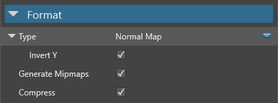
| プロパティ | 説明 |
|---|---|
| Invert Y | 正のY成分（緑）が接線空間で上を向いていると見なします。これは、法線マップを作成するために使用するツールによって異なります。 |
マテリアルにおける法線マップのプロパティについては、マテリアル：ジオメトリ属性を参照してください。